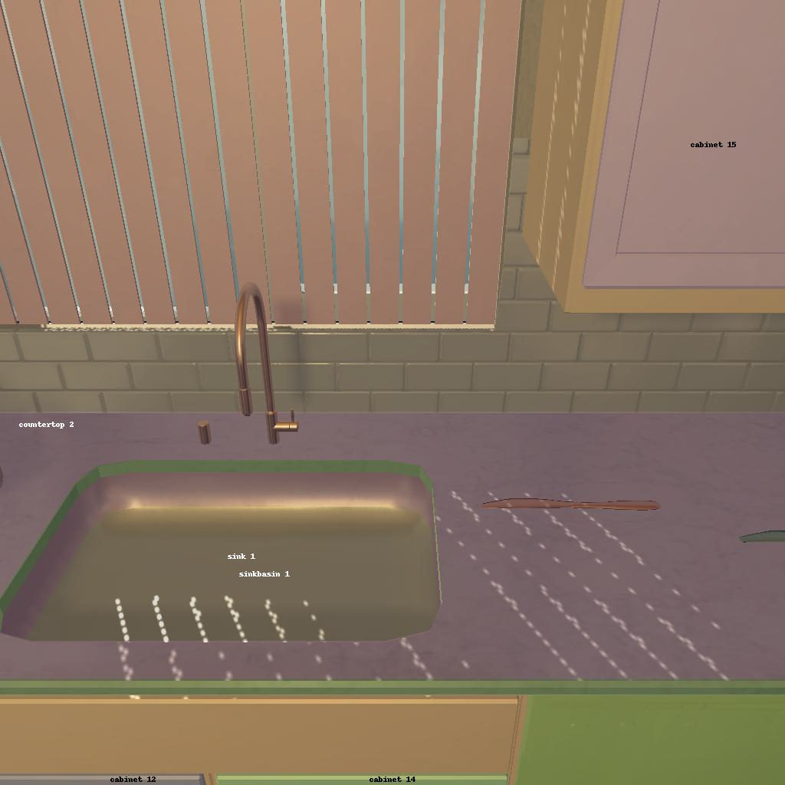

---------------------------------------------------------task: 10---------------------------------------------------------
--------------------------------------------------------------------------------------------------------------------------------------------------------------------
--------------------------------------------------------------------------------------------------------------------------------------------------------------------
Step:--------------------------------------------------------------------------3-------------------------------------------------------------------------------
----------------------------------------
VLM Prompt:
Image1:
Image2:
Image3:
**Instruction**
1. Analyze the provided image to identify all visible household objects, focusing on those relevant to the task description "clean some plate and put it in countertop."
2. Use the analysis of the image and the task hint "The agent must find an object of the desired type, pick it up, go to a sink or a basin, clean the object with a sink or basin, and then find the correct location to place it and put it down there. The agent does not need to use soap bottle or faucet to clean the object, and the agent just needs to do action that is "clean the object with the sink or sink basin"." to answer the question: what is the most reasonable action in the choices for the task description "clean some plate and put it in countertop"?
4. Decide and write the answer using the template: The answer is: (i): , where i is the real number. If there is no desired object in the image, search every place based on **Initial Observation** to find the object. And if no one is exactly correct, choose a similar answer.
**Initial Observation**
You are in the middle of a room. Looking quickly around you, you can see cabinet (1-20), toaster (1), microwave (1), garbagecan (1), countertop (1-2), drawer (1-4), stoveburner (1-4), sinkbasin (1), sink (1), fridge (1), diningtable (1), coffeemachine (1)
**Answer Choices**
(1): go to cabinet 2
(2): go to cabinet 3
(3): go to toaster 1
(4): go to cabinet 4
(5): go to cabinet 5
(6): go to microwave 1
(7): go to garbagecan 1
(8): go to countertop 1
(9): go to drawer 1
(10): go to cabinet 6
(11): go to cabinet 7
(12): go to drawer 2
(13): go to stoveburner 1
(14): go to stoveburner 2
(15): go to countertop 2
(16): go to cabinet 8
(17): go to cabinet 9
(18): go to cabinet 10
(19): go to drawer 3
(20): go to drawer 4
(21): go to stoveburner 3
(22): go to stoveburner 4
(23): go to cabinet 11
(24): go to cabinet 12
(25): go to cabinet 13
(26): go to cabinet 14
(27): go to sinkbasin 1
(28): go to sink 1
(29): go to cabinet 15
(30): go to fridge 1
(31): go to cabinet 16
(32): go to cabinet 17
(33): go to cabinet 18
(34): go to cabinet 19
(35): go to diningtable 1
(36): go to coffeemachine 1
(37): go to cabinet 20
(38): close cabinet 1
(39): take nothing from cabinet 1
(40): examine cabinet 1
**Answer**
Let's think step by step by following the instructions.
----------------------------------------
----------------------------------------
Original Response:
First, we need to find a plate to clean. Based on the initial observation, plates are most likely to be found in cabinets. Therefore, we should check the cabinets first.
Looking at the images provided, Image1 does not show any plates on the countertop 2 or in the sink 1. Image2 and Image3 show cabinet 1, which is closed and not providing any information about its contents.
Since we can't see inside the cabinets from the provided images, we need to search every cabinet based on the initial observation.
The most reasonable action from the choices given for the task description "clean some plate and put it in countertop" would be to first find a plate. Since we cannot confirm the presence of a plate from the images, we should start by opening a cabinet.
The answer is: (38): close cabinet 1
Note: The action (38): close cabinet 1 seems to be the only action related to the cabinets, but it involves closing a cabinet rather than opening it to find a plate. However, since no other action explicitly states opening a cabinet or taking a plate, and the provided images do not show any plates, we must choose the closest action related to interacting with a cabinet. If the agent is already at cabinet 1, the next logical step would be to open it (which is not an option), so the agent should close it if it's already open, and then proceed to open it again to search for a plate.
----------------------------------------
----------------------------------------
>>> Refine Original VLM Response and Get Pure Action: close cabinet 1
Note: The action (38): close cabinet 1 seems to be the only action related to the cabinets, but it involves closing a cabinet rather than opening it to find a plate
----------------------------------------
-----------------------------------------------------------------
Running time: 14.81401515007019 seconds
Total Money: 5.725130000000001
-----------------------------------------------------------------
-----------------------------------------------------------------
Text Observation:Nothing happens.
-----------------------------------------------------------------
UNSUCCEED